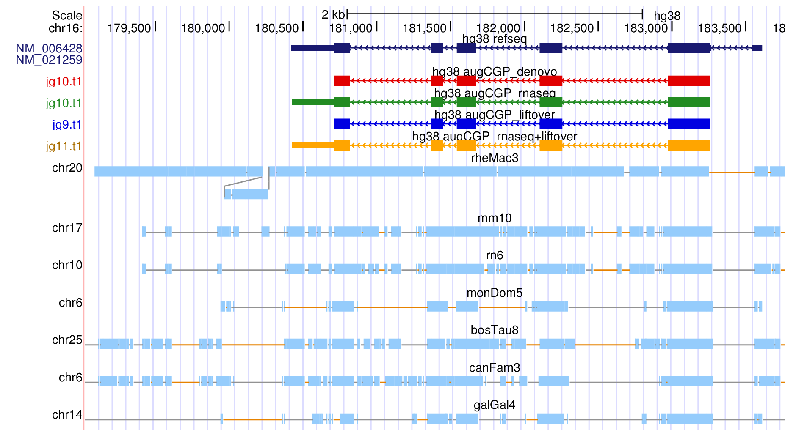

|
CGP (comparative gene prediction) is a recent extension of AUGUSTUS for clade annotation. It takes two or more genomes of related species and predicts all genes (only protein-coding and one isoform per gene) in all input genomes at the same time. AUGUSTUS-CGP can integrate the same types of evidence as in single-species mode for either a subset or all genomes. A genome alignment of the species is used to transfer evidence across genomes and to exploit evolution evidence for genes, e.g. by looking for conserved regions and regions that are under negative selection. For further reading, see König et al. (2016) In this tutorial we practice the most common applications of AUGUSTUS-CGP: de novo gene finding (i.e. only the raw genomes are used and no extrinsic evidence), integration of RNA-Seq evidence and lifting over annotations from one (or more) species to the other species in the clade. AUGUSTUS-CGP has three mandatory inputs: the set of genomes, each in Multi-FASTA format, an alignment of the genomes and a phylogenetic tree in NEWICK format. You don't have a whole-genome alignment for your clade? No problem - the tutorial covers how a whole-genome alignment can be created with progressiveCactus. The output alignment of progressiveCactus is in HAL format, which can be displayed as Assembly Hubs in the Genome Browser. In one of the exercise, we will set up such an Assembly Hub and show how gene tracks can be uploaded for visualization. If the phylogeny of the species is not known, we recommend using a star-like tree with uniform branch lengths. |  |
Assignments are in this color. The lazy ones may go through very fast through this tutorial by just reading these assignments and cutting and pasting the commands that follow them (more or less).
Results are in this color.
| species | assembly | genomic region |
|---|---|---|
| human | hg38 | chr16:186964-397118 |
| mouse | mm10 | chr17:26104939-26283331 |
| rat | rn6 | chr10:15470071-15570014 |
| cow | bosTau8 | chr25:224163-380253 |
| dog | canFam3 | chr6:40126702-40311429 |
| rhesus | rheMac3 | chr20:149129-369768 |
| rabbit | monDom5 | chr6:149454308-149994826 |
| chicken | galGal4 | chr14:12108253-12258251 |